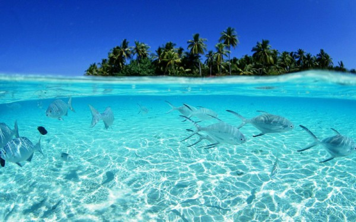

Тихий океан
Тихий Океан
Ти́хий океа́н (устар. Великий океан[3][4]) — самый большой по площади и глубине океан на Земле. Расположен между материками Евразией и Австралией на западе, Северной и Южной Америкой на востоке, Антарктидой на юге.
Тихий океан простирается приблизительно на 15,8 тыс. км с севера на юг и на 19,5 тыс. км с востока на запад. Площадь с морями — 178,684 млн км²[1], средняя глубина — 3984 м. Наибольшая глубина Тихого океана (и всего Мирового океана) — 10 994 м (в Марианском жёлобе)[2]. Через Тихий океан примерно по 180-му меридиану проходит линия перемены даты. По площади Тихий океан превосходит всю сушу почти на 30 млн км².